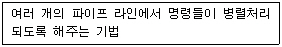
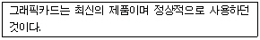
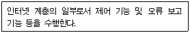

PC정비사-1급 (2002-06-30 기출문제)
1과목: PC운영체제
1. 다음 리눅스 명령어 중에서 의미가 다른 하나는?
- reboot
- init 6
- shutdown -r now
- shutdown -h now
(정답률: 알수없음)

2. test라고 하는 파일 내에 ICQA라는 단어를 찾기 위한 명령은?
- grep test ICQA
- grep ICQA test
- find -name ICQA test
- find -name ICQA test
(정답률: 80%)
3. 다른 사용자가 자신의 파일을 읽거나 기록, 실행하는 것을 조절하기 위한 명령은?
- chmod
- su
- find
- cat
(정답률: 알수없음)
4. 매크로내에서 여러 개의 매크로를 호출할 때 사용되는 자료 구조 중 가장 효율적인 것은?
- Queue
- Tree
- Stack
- Linked List
(정답률: 알수없음)
5. 가상 기억 장치의 페이징 기법에서 사용되는 주소 변환의 종류가 아닌 것은?
- Direct Mapping
- Associative Mapping
- Associative/Direct Mapping
- High Speed Mapping
(정답률: 알수없음)
6. 다음 중 프로세스 스케쥴링의 종류가 아닌 것은?
- FIFO ( First In First Out ) 스케쥴링
- Round Robin 스케쥴링
- Shortest Job First 스케쥴링
- Semaphore 스케쥴링
(정답률: 알수없음)
7. 다음 프로그램들 중 성격이 다른 하나는?
- Melissa
- 백오피스
- CIH
- Happy99
(정답률: 59%)
8. DOS와 Windows 98 그리고 LINUX 운영체제를 하나의 컴퓨터에서 사용하려고 할 때 인스톨의 순서는?(Linux용 플로피 부팅디스크를 만들지 않는다.)
- DOS - LINUX - Windows98
- 함께 사용할 수 없다.
- DOS - Windows98 - LINUX
- LINUX - Windows98 - DOS
(정답률: 75%)
9. 운영체제의 발전과정과 추세에 대한 다음 설명 중 적절하지 않은 것은?
- 운영체제는 초기에는 자원의 효율적 관리가 가장 중요한 목표였으나 점차 사용 환경이 더 중요한 목표가 되었다.
- 사용환경의 편리성을 위해 하드웨어적인 문제는 점차 사용자로부터 격리되어 시스템의 책임하에 운영하도록 개선되었다.
- 사용 편이성 증대를 목적으로 그래픽 사용자 접속 환경(GUI:Graphic User Interface)이 개발되어 사용자는 직관적이고 간편하게 사용할 수 있도록 하였다.
- GUI 환경은 사용의 편의성을 위해 각종 설정을 단순화 시켰으므로 누구나 쉽게 시스템의 설정 상태를 자유롭게 조절할 수 있게 되었다.
(정답률: 67%)
10. 컴퓨터를 대화적으로 사용하기 위해서 CPU 스케줄링과 다중 프로그래밍 기법을 사용하여 각 사용자들에게 일정 시간을 할당하고 CPU를 그 시간만큼 사용할 수 있게 하는 운영체제 방식은?
- 시분할 체제
- 다중 프로그래밍 체제
- 일괄 처리 체제
- 실시간 체제
(정답률: 알수없음)
11. 레이드를 구성하고 있는 하드디스크 중 하나에 문제가 생겼을 때 복구를 할 수 있는 시스템이 아닌 것은?
- 레이드0
- 레이드1
- 레이드0+1
- 레이드5
(정답률: 80%)
12. 다음 중 평면 CRT기술이 아닌 것은?
- 섀도우 마스크
- 트리니트론
- 에르고플랫
- 다이나플랫
(정답률: 59%)
13. 하나의 칩에 두 개 이상의 프로세서를 통합시키는 기술은?
- 대칭형 다중처리(SMP)
- 칩 마이크로프로세싱(CMP)
- 쿠앤티스피드 아키텍처
- P6마이크로 아키텍처
(정답률: 알수없음)
14. 다음 SCSI에 대한 설명 중 틀린 것은?
- SCSI 어댑터는 IDE에 비해 적은 CPU 사용률을 가진다.
- SCSI 방식은 종류에 따라 7개에서 15개의 주변 장치를 부착할 수 있다.
- SCSI 방식은 각각의 장치에 ID를 할당해 주어야 하며 대부분 7번 ID는 SCSI 어댑터가 사용한다.
- SCSI 방식은 저속의 장치(스캐너, 프린터 등)에는 사용할 수 없다.
(정답률: 알수없음)
15. 다음 중 PC용 운영체제가 플로피디스크에 수행하는 논리적 포맷을 수행할 때 만들어지는 디스크 영역이 아닌 것은?
- 부트 기록
- 파일 할당표(FAT)
- 루트 디렉토리
- 운영체제 버전
(정답률: 74%)
2과목: PC주변기기
16. 하드디스크의 데이터 주소지정 방법 중 LBA 방식의 최대 지원 용량은?
- 160GB
- 125GB
- 150GB
- 137GB
(정답률: 60%)
17. 다음 그래픽카드 중 기본적으로 3D 가속기능이 없는 것은?
- GEFORCE4
- 레이디언7500
- i 740
- ET 4000
(정답률: 64%)
18. 다음 중 이론적으로 가장 빠른 속도를 내는 방식은?
- IEEE-1394
- USB 2.0
- USB-OTG
- USB 1.0
(정답률: 62%)
19. 다음 중 그래픽코어를 내장하지 않은 칩셋은?
- 인텔 845G
- 인텔 815
- 인텔 810
- 인텔 845
(정답률: 37%)
20. 동작원리가 잘못 설명된 것은?
- 볼 마우스 : 공을 굴려서 공의 이동거리와 방향을 감지
- 광 마우스 : 빛을 쏘아서 반사된 빛을 센서로 감지한 후 이동거리를 측정
- 전자펜 마우스 : 펜 끝을 깔판에 대면 깔판 밑에 배열된 전자장치가 펜의 위치를 판독
- 터치 패드 : 공을 손으로 직접 굴림으로써 공의 이동 거리를 감지
(정답률: 알수없음)
21. IEEE-1394로 연결된 외장 하드에서 내장 하드로 데이터를 복사하려고 한다. 400MB의 파일을 복사하는데 걸리는 시간은?(단 케이블 등에서의 속도 감쇠는 없고 IEEE-1394의 최대 속도로 복사한다고 가정한다.)
- 1초
- 4초
- 8초
- 16초
(정답률: 알수없음)
22. 다음 중 가장 적은 발열을 나타내는 CPU는?
- C3
- 애슬론XP
- 애슬론MP
- 펜티엄4
(정답률: 알수없음)
23. 10BaseT 케이블의 특징으로 적합하지 않은 것은?
- 실제로 가장 많이 사용되는 배선 케이블이다.
- UTP 케이블과 RJ-45잭을 사용한다.
- 허브와 연결할 수 있는 케이블의 최대 길이는 200M이다.
- 기저대역 전송방식으로 10Mbps의 속도를 제공한다.
(정답률: 67%)
24. PCM 방식으로 샘플링한 실제 악기 소리를 사운드카드의 메모리에 웨이브 형태로 저장해 두었다가 재생시에 이용하는 사운드카드 방식은?
- AM 방식
- FM 방식
- MIDI 방식
- Wavetable 방식
(정답률: 46%)
25. 디지털카메라는 CCD 렌즈를 사용하여 사진을 촬영하는데, 현재까지 발표된 디지털 카메라의 구현 방법 중 가장 뛰어난 화질을 나타내는 방식과 가장 낮은 화질을 나타내는 방식을 연결한 것은?
- Linear Array 방식 - Oneshot One Array 방식
- Oneshot Three Array 방식 - Linear Array 방식
- Linear Array 방식 - Oneshot Three Array 방식
- Oneshot Three Array 방식 - Oneshot Three Array 방식
(정답률: 알수없음)
26. 레이저프린터에서 이면지가 자주 걸리는 이유로 부적절한 것은?
- 레이저프린터의 원리상 종이가 전하를 띠기 때문에
- 드럼에 생성된 양전하가 남아 있을 때
- 이면지를 사용할 경우 전에 출력했던 면이 다시 녹으면서 롤러에 달라붙기 때문에.
- 토너의 품질이 잉크젯프린터에 비해 나쁘기 때문에
(정답률: 65%)
27. 다음 중 RF방식의 마우스에 대한 설명으로 옳은 것은?
- 적외선을 이용한다.
- 장애물에 많은 영향을 받기 때문에 설치장소를 잘 고려해야 한다.
- 무선주파수 방식이다.
- IR방식이라고도 한다.
(정답률: 69%)
28. 다음 중 차세대 영상 기록 매체로, 4.7GB∼17GB 대용량 데이터를 기록할 수 있는 DVD규격에 따른 용량 비교가 잘못된 것은(순서 : 규 격, 기록 면, 기록 방식, 용 량, 재생시간)?
- DVD-5, 1, 단층, 4.7GB, 133분
- DVD-9, 1, 복층, 8.5GB, 240분
- DVD-10, 2, 단층, 9.4GB, 266분
- DVD-15, 2, 복층, 17GB, 380분
(정답률: 70%)
29. 다음은 펜티엄 CPU의 특징을 설명한 것이다. 무엇에 대한 설명인가?

- 분기예측
- 병렬처리
- 슈퍼 스컬러
- 파이프 라인
(정답률: 40%)
30. 다음은 메인보드 상에 장착되어 있는 커넥터들을 나열한 것이다. 이 중 올바르지 않은 것은?
- IDE 디스크 드라이브 커넥터
- 플로피 드라이브 커넥터
- CD-ROM 드라이브 연결을 위한 전용 커넥터
- CPU를 장착할 수 있는 CPU 소켓
(정답률: 64%)
3과목: 디지털 논리회로
31. 디지털 집적회로에 대한 설명으로 옳지 않은 것은?
- TTL은 디지털 집적회로 중의 하나이다.
- C-MOS은 디지털 집적회로 중의 하나이다.
- C-MOS은 N형 트랜지스터를 서로 조합해 제작된 집적회로이다.
- 디지털 집적회로는 반도체 구조나 전기적 특성을 고려하여 제작된다.
(정답률: 알수없음)
32. 다음 논리 IC 중 자체 전력 소모가 가장 적은 것은?
- ECL
- CMOS
- TTL
- DTL
(정답률: 알수없음)
33. 2 진수 체계에서 2 의 보수와 1 의 보수간의 관계는 어떠한가?
- 2의 보수 = 1의 보수 + 1
- 2의 보수 = 1의 보수 + 2
- 2의 보수 = 1의 보수 -1
- 2의 보수 = 1의 보수 -2
(정답률: 64%)
34. 다음 중 연산의 중심이 되는 레지스터는?
- 데이터 레지스터
- 상태 레지스터
- 어드레서 레지스터
- 인덱스 레지스터
(정답률: 64%)
35. 숫자를 EBCDIC로 표현하면 A~I까지를 나타낼 때 앞에서 부터 4비트(존 비트)는 어떤 형태로 표현되는가?
- 0100
- 1100
- 1101
- 1111
(정답률: 알수없음)
4과목: PC유지보수
36. Windows 98에서 시스템에 설치된 하드웨어 구성과 소프트웨어 설정에 관한 각종 정보를 담고 있는 일종의 데이터베이스는?
- 드라이버(Driver)
- 레지스터(Register)
- 레지스트리(Registry)
- 엑세스(Access)
(정답률: 70%)
37. 컴퓨터 전원 스위치를 On 시키지도 않았는데 갑자기 켜질때의 해결책은?
- CMOS 셋업의 전원관리 메뉴 중 모뎀, LAN 카드 신호 검출과 마우스, 키보드 동작에 따른 전원 공급 부분을 Disabled로 셋팅
- 윈도우 드라이버 문제이므로 제어판의 장치관리자를 사용하여 드라이버 점검
- 부트 섹터가 바이러스에 의해 파괴된 경우이므로 OS를 새로 셋팅
- RAM이 메인보드가 지원하는 종류인가 확인
(정답률: 88%)
38. 다음은 일반적인 PC 장애이다. 그 원인이나 대처 방법이 잘못된 것은?
- 모니터에 'No Signal'이라는 메시지가 나오면서 화면이 나타나지 않는다 - 모니터와 그래픽 카드를 연결하는 케이블 및 그래픽 카드 연결 상태 확인
- 윈도우에서 마우스 포인터의 움직임이 둔해졌다 - 마우스 볼을 청소하거나 교체
- 'FDD Controller Failure'이라는 메시지가 표시되면서 플로피 디스크 드라이브를 사용할 수 없다 - FDD 컨트롤러 불량 및 케이블 연결 상태 확인
- 하드디스크를 포맷하고 새로 윈도우를 설치하려는데 CD-ROM이 도스 모드에서 인식을 못해 설치할 수 없다 - 점퍼를 현재와 다른 방향으로 5∼8초간 연결하였다가 다시 처음 상태로 되돌린다.
(정답률: 79%)
39. SCSI를 표준으로 인정한 단체는?
- VESA
- SCSI
- ANSI
- ISA
(정답률: 46%)
40. 컴퓨터는 정상적으로 동작하나 화면의 색상이 정상적인 출력이 되지 못하는 경우, 관련이 없는 것은?

- 모니터 색상 조절 버튼을 이용하여 색상을 변경한다.
- 모니터 전원을 껐다가 다시 켠다.
- 그래픽 카드를 점검한다.
- 그래픽 카드를 다른 슬롯에 끼워본다.
(정답률: 36%)
41. 다음은 Dr. Watson에 대한 설명이다. 옳지 않은 것은?
- Dr. Watson은 시스템 및 프로그램 실패에 대한 정보를 감지하고 그 정보를 로그 파일에 기록
- 프로그램 오류가 발생할 경우 Dr. Watson이 자동으로 시작
- Dr. Watson은 오류가 발생하는 것을 방지
- Dr. Watson을 열려면 시작을 클릭하고 실행을 클릭한 다음 drwtsn32를 입력
(정답률: 알수없음)
42. 컴퓨터 조립 후 전원을 넣었더니 LED와 쿨링팬은 정상으로 작동하는데 아무런 소리도 없고, 부팅도 되지 않는다(POST 진행이 되지 않는다). 그 이유를 추론할 때 가능성이 먼 것은?
- CPU가 정확하게 장착되지 않았다.
- 메인보드 BIOS를 업그레이드 하는 도중 갑자기 정전되었다.
- 디스플레이 어댑터가 완전히 장착되지 않았다.
- 메인보드의 호스트 칩셋과 CPU로 연결되는 회선이 단락되었다.
(정답률: 알수없음)
43. 하드디스크를 새로 연결한 후 계속 에러가 나고 하드디스크가 정상적으로 작동하지 않는다. 다음의 어떤 경우에 에러가 날수 있는가?
- DMA66지원 하드디스크를 40핀 80라인의 하드디스크 케이블로 연결하였다.
- 전에 있던 하드를 CD-ROM과 연결하고 하드는 세컨드리 슬레이브로 CD-ROM은 세컨드리 마스터로 점퍼설정한 후 새로운 하드를 프라이머리 마스터로 연결하였다.
- DMA66케이블의 길이가 여의치 않아 전에 메인보드에 있던 부분을 첫 번째 하드에 연결하고 중간에 새로운 하드를 연결해 각각 마스터와 슬레이브로 점퍼설정하고 전에 하드에 연결되어 있던곳을 메인보드에 연결하였다.
- DMA66지원 하드디스크를 DMA100을 지원하는 케이블로 연결하였다.
(정답률: 알수없음)
44. Windows 98 운영체제에서 시스템 검사를 수행할 때 검사 대상인 것으로만 나열된 것은?
- 마더보드, win.ini, system.ini
- 레지스트리, win.ini, system.ini, msdos.sys
- 레지스트리, win.ini, system.ini
- msdos.sys, win.ini, system.ini
(정답률: 87%)
45. 컴퓨터 조립 후, 전원을 켜고 테스트를 하려는데 모니터에 아무런 내용도 나타나지 않는다. 다음 중 이 문제의 원인이 될 수 없는 것은?
- 전원공급장치(Power Supply)의 불량이다.
- 하드디스크의 불량이다.
- 램이 제대로 장착되어 있지 않은 상태이다.
- 그래픽 카드가 제대로 연결되어 있지 않은 상태이다.
(정답률: 73%)
46. 레지스트리를 안전하게 관리하는 방법으로 잘못된 것은?
- scanreg/fix 명령어로 레지스트리에 발생한 문제를 치료해 준다.
- scanreg/scan 명령어로 레지스트리를 정기적으로 검사해 준다.
- scanreg/backup 명령어를 이용해서 레지스트리를 백업해 둔다.
- 레지스트리 편집기로 불필요한 내용을 찾아 삭제해 준다.
(정답률: 47%)
47. 아이콘이 엉뚱한 것으로 표시되는 경우의 해결 방법으로 옳은 것은?
- 디스크 캐시의 크기를 늘려주고 시스템을 재시작한다.
- 가상 메모리의 크기를 늘려주고 시스템을 재시작한다.
- 비디오 드라이버를 최신으로 업데이트 한 다음, 시스템을 재시작한다.
- 아이콘 캐시 파일을 삭제하고 시스템을 재시작한다.
(정답률: 알수없음)
48. 바이오스(BIOS)의 종류에 속하지 않는 것은?
- Dvorak
- AMI
- Award
- MR
(정답률: 50%)
49. 한글윈도우98과 도스6.0을 멀티부팅으로 사용하고 있다. 그런데 도스로 부팅하고 메모리 체크를 하였더니 기본메모리가 639KB였다. 바이러스 치료프로그램으로 치료한 후 다시 조사하니 역시 기본메모리가 639KB이다. 원인은?
- 바이러스의 감염이다.
- CIH바이러스에 감염되었다.
- PS/2마우스가 1KB를 점유하고 있다.
- 바이러스 감염이 아니고 메모리가 이상이다.
(정답률: 67%)
50. Windows 98을 사용하는 운영체제에서 시스템을 조립하려고 한다. 다음의 부품 선택이 잘못된 것은?
- 큰 종이에 인쇄를 하기 위하여 디지타이저를 장착한다.
- 네트웍 환경을 위해서 LAN Card를 장착한다.
- PC에서 TV를 보기 위해서 TV Card를 장착한다.
- 스캐너를 달기 위해서 SCSI Card를 장착한다.
(정답률: 54%)
5과목: PC네트워크
51. 어떤 컴퓨터든 통신 세션을 시작할 수 있는 통신 모델을 지칭하며 네트워크에 연결되어 있는 모든 컴퓨터들이 서로 대등한 입장에서 데이터나 주변장치 등을 공유할 수 있다는 의미를 담고 있는 모델은?
- 클라이언트/서버 모델
- 마스터/슬레이브 모델
- Peer to Peer 모델
- N2N(Network to Network) 모델
(정답률: 64%)
52. 인터넷 프로토콜인 IP가 IP V4에서 IP V6으로 성능이 개선되었다. 개선된 점이 아닌 것은?
- 확장된 IP 주소공간(Expanded Addressing)
- 규모 조정이 가능한 라우팅(Scalable Routing)
- 네트워크에서의 감사기능과 보안기법 제공
- IP V4에 비해 IP V6는 헤더부분 축소
(정답률: 알수없음)
53. NetBIOS에서 제공하는 기본 서비스가 아닌 것은?
- 라우팅 서비스(Routing Service)
- 데이터그램 서비스(Datagram Service)
- 세션 서비스(Session Service)
- 이름부여 서비스(Naming Service)
(정답률: 알수없음)
54. 회사, 기업 등 정해진 범위내에서 인터넷 기술을 이용하여 분산된 정보를 공유토록 구축된 연동망은?
- Intranet
- Extranet
- Publicnet
- B-ISDN
(정답률: 알수없음)
55. 인터넷을 이용한 전자 상거래에서 멀티미디어 컨텐츠의 지적 소유권 보호를 위해 컨텐츠에 사용자 정보를 숨겨 저작권 및 소유권을 보호하는 방법은?
- Watermarking
- 암호화
- PGP ( Pretty Good Privacy )
- SHTTP ( Secure-HTTP )
(정답률: 알수없음)
56. 다음 중 프록시의 기능을 설명한 것은?
- 자주 접속하는 사이트의 데이터를 서버에 저장 해 둠으로서 인터넷 속도를 개선하는 기능이다.
- 접속했던 사이트의 기록을 제거하는 기능이다.
- 인터넷 접속을 위한 통신 프로토콜 기능이다.
- 인터넷의 웹 접속 기록을 저장하는 기능이다.
(정답률: 알수없음)
57. 다음은 인터넷에서 어느 프로토콜의 기능을 설명하는가?

- TCP/IP
- SNMP
- ARP
- ICMP
(정답률: 알수없음)
58. Class C급 IP 주소를 할당 받았을 경우 클라이언트 및 서버 주소로 사용할 수 없는 것은?
- xxx.xxx.xxx.127
- xxx.xxx.xxx.1
- xxx.xxx.xxx.255
- xxx.xxx.xxx.254
(정답률: 알수없음)
59. 다음 중 OSI 7계층의 구조를 순서대로 (하부구조부터) 바르게 나열한 것은?
- 네트워크→데이터 링크→물리→세션→표현 →응용→트랜스 포트
- 응용→표현→세션→물리→데이터 링크→트랜스 포트→네트워크
- 세션→표현→물리→응용→트랜스 포트→데이터 링크→네트워크
- 물리→데이터 링크→네트워크→트랜스 포트 →세션→표현→응용
(정답률: 75%)
60. 다음 중 프로토콜의 기본 요소가 아닌 것은?
- 구문(Syntax)
- 의미(Semantic)
- 타이밍(Timing)
- IP(Internet Protocol)
(정답률: 70%)
설명:
- "reboot": 시스템을 재부팅한다.
- "init 6": 시스템을 재부팅한다. (init 프로세스를 6으로 변경하는 것과 같다)
- "shutdown -r now": 시스템을 재부팅한다. (-r 옵션은 재부팅을 의미한다)
- "shutdown -h now": 시스템을 종료한다. (-h 옵션은 종료를 의미한다)